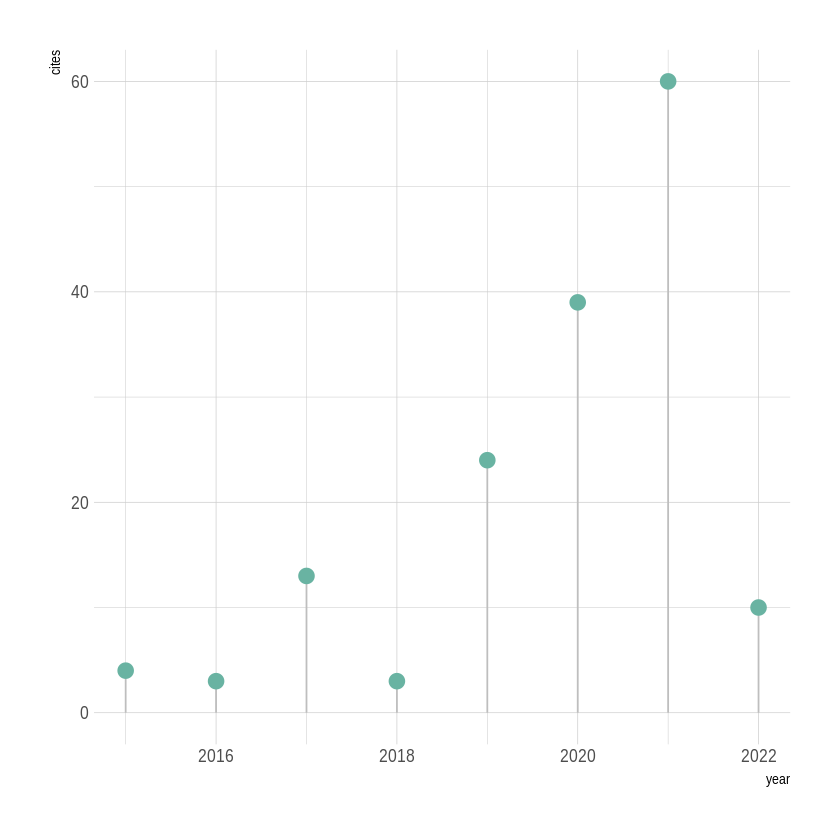
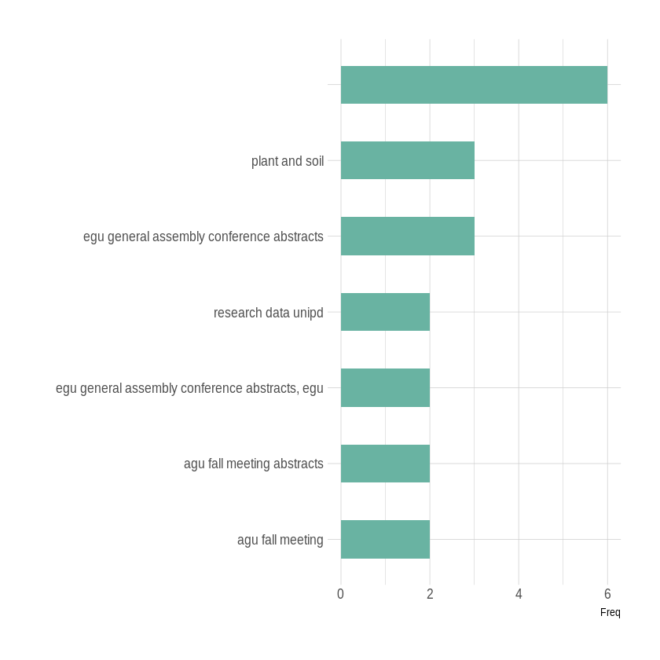
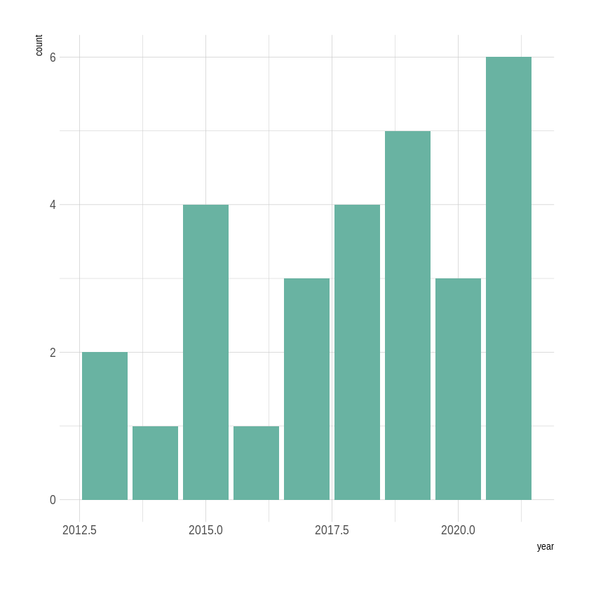
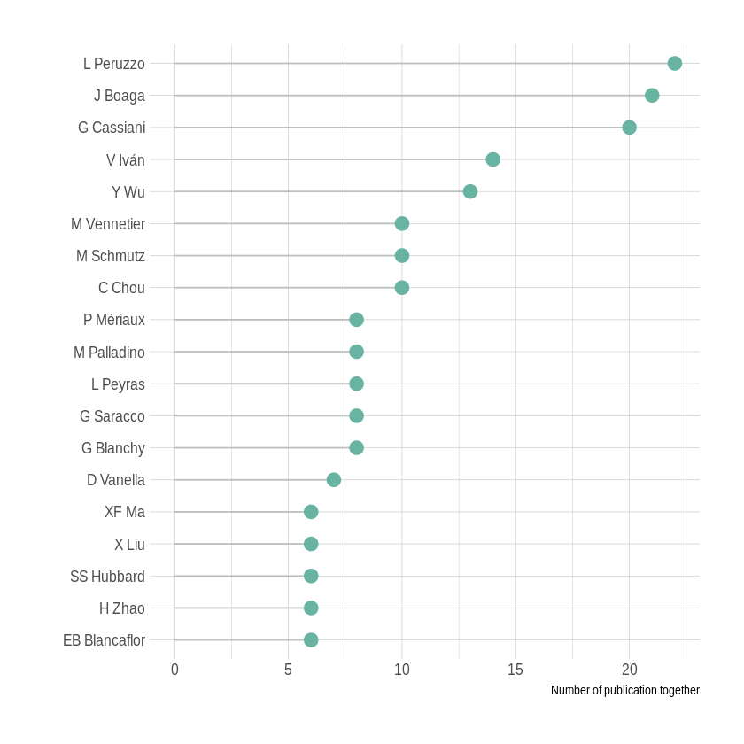
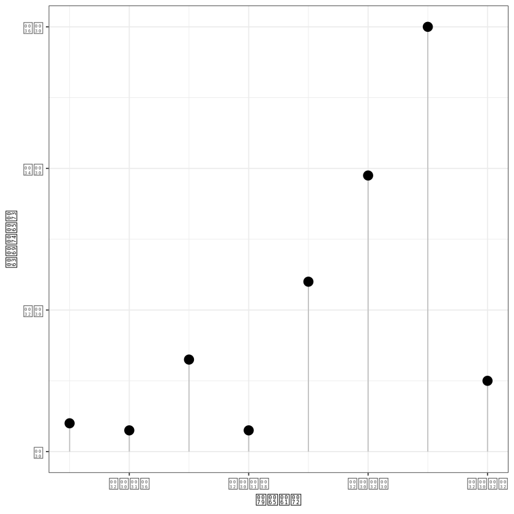
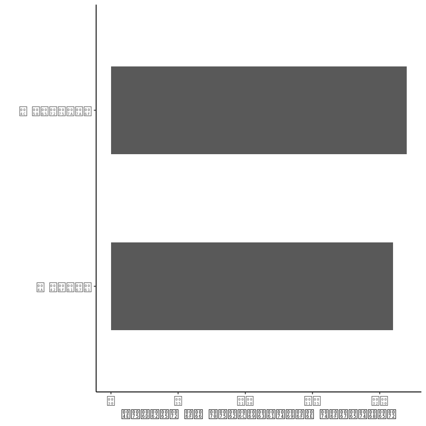

Contents
library(rmarkdown)
library(scholar) # To request data from google scholar.
library(tidyverse) # What do you do without?
library(hrbrthemes)
library(DT)
Error in library(scholar): there is no package called ‘scholar’
Traceback:
1. library(scholar)
# Define the google scholar id
id <- '3kDP4-AAAAAJ&hl' # Benjamin Mary
get_num_articles(id)
get_coauthors(id)
Error in get_num_articles(id): could not find function "get_num_articles"
Traceback:
# Make an object called l with all the basic info of this id: name, affiliation, # of cites, H index, homepage ...
l <- get_profile(id)
name=l$name
tmp=strsplit(name, " ") %>% unlist()
last_name = tmp[length(tmp)]
# Show the last name
last_name
Error in get_profile(id): could not find function "get_profile"
Traceback:
# get the info
citation = get_citation_history(id)
# plot it
citation %>%
ggplot( aes(x=year, y=cites)) +
geom_segment( aes(x=year, y=0, xend=year, yend=cites), color="grey") +
geom_point( size=4, col="#69b3a2") +
theme_ipsum()

data=get_publications(id)
datatable(data, rownames = FALSE, options = list(pageLength = 4))
Error in as.character(function (.variables, drop = FALSE) : cannot coerce type 'closure' to vector of type 'character'
Traceback:
1. get_publications(id)
2. sprintf(url_template, id, cstart, pagesize)
table(tolower(data$journal)) %>% as.data.frame() %>% filter(Freq>1) %>% arrange(Freq) %>% mutate(Var1=factor(Var1, Var1)) %>%
ggplot(aes(x=Var1, y=Freq)) +
geom_bar(stat="identity", width=0.5, fill="#69b3a2") +
coord_flip() +
xlab("") +
theme_ipsum()

data %>%
ggplot(aes(x=year)) +
geom_bar( fill="#69b3a2") +
theme_ipsum()

# Compute all the pairs observed in the dataset:
return_all_pair=function(x){
tmp = x %>% gsub(", \\.\\.\\.", "", .) %>% strsplit(", ") %>% unlist()
if(length(tmp)>1){
tmp = t(combn(tmp, 2))
}
return(tmp)
}
list_of_pairs = lapply( data$author, return_all_pair )
connect = do.call(rbind, list_of_pairs) %>% unique()
colnames(connect)=c("from", "to")
# Delete the target author from this list
connect = connect %>%
as.data.frame() %>%
filter( !grepl(last_name, from, ignore.case = TRUE) ) %>%
filter( !grepl(last_name, to, ignore.case = TRUE) )
# Change format to adjacency matrix and save it
#connect %>%
# mutate(value=1) %>%
# spread(from, to)
c( as.character(connect$from), as.character(connect$to)) %>%
table() %>%
as.data.frame() %>%
filter(Freq>5) %>%
arrange(Freq) %>%
mutate(Var1=factor(.,.)) %>%
ggplot(aes(x=Var1, y=Freq)) +
geom_segment( aes(x=Var1, y=0, xend=Var1, yend=Freq), color="grey") +
geom_point( size=4, col="#69b3a2") +
coord_flip() +
xlab("") +
theme_ipsum() +
ylab("Number of publication together")

# Load libraries
library(scholar) # To request data from google scholar.
library(tidyverse) # What do you do without?
library(igraph) # To create a Network Object.
library(ggraph) # To create the network visualization.
# Define the google scholar ids for several researchers
id <- '3kDP4-AAAAAJ&hl' # Benjamin Mary
# Get his profile and print his name
l <- get_profile(id)
name=l$name
tmp=strsplit(name, " ") %>% unlist()
last_name = tmp[length(tmp)]
last_name
# Get his citation history, i.e. citations to his work in a given year
citation = get_citation_history(id)
citation %>%
ggplot( aes(x=year, y=cites)) +
geom_segment( aes(x=year, y=0, xend=year, yend=cites), color="grey") +
geom_point( size=4) +
theme_bw()
'Mary'

# Get his publications (a large data frame)
data=get_publications(id)
# Make a dataframe with all the connection between author?
list_of_pairs = lapply( data$author, return_all_pair )
# Concatenate all these list in a data frame
connect = do.call(rbind, list_of_pairs) %>% unique()
colnames(connect)=c("from", "to")
nrow(connect)
# Delete the target author
connect = connect %>%
as.data.frame() %>%
filter( !grepl(last_name, from, ignore.case = TRUE) ) %>%
filter( !grepl(last_name, to, ignore.case = TRUE) )
nrow(connect)
# Number of different coauthor?
N_coauthor = c( as.character(connect$from), as.character(connect$to)) %>% unique() %>% length()
N_coauthor
# Top - coauthor?
c( as.character(connect$from), as.character(connect$to)) %>% table() %>% as.data.frame() %>% filter(Freq>20) %>% arrange(Freq) %>% mutate(Var1=factor(.,.)) %>%
ggplot(aes(x=Var1, y=Freq)) +
geom_bar(stat="identity", width=0.5) +
coord_flip() +
xlab("") +
theme_classic() +
ylab("Number of publication together")
# Make a data frame with caracteristics concerning the co authors?
coauth=data.frame(name=unique(c( as.character(connect$from), as.character(connect$to)) ))
#Average year of copublication with our target?
return_year=function(i){
name=gsub(" ", "", i)
myrows=grep(name, gsub(" ", "", data$author))
val=mean(data$year[ myrows ], na.rm=T)
return(val)
}
coauth$year = sapply(coauth$name, return_year)
242
177
56

# Plot the network?
mygraph <- graph_from_data_frame( connect, vertices=coauth)
# Find the number of connection per people
V(mygraph)$vertex_degree <- degree(mygraph)
V(mygraph)$vertex_degree[V(mygraph)$vertex_degree<10]=0
# Find the community?
wc <- cluster_edge_betweenness(mygraph)
modularity(wc)
membership(wc)
plot(wc, mygraph)
0.508729930735102
L Peruzzo J Boaga M Schmutz Y Wu SS Hubbard
1 2 1 1 3
D Vanella S Consoli M Vennetier C Zanetti G Saracco
4 4 5 5 5
L Peyras P Mériaux N Cenni F Abdulsamad C Chou
5 5 3 6 1
FM Wagner S Garré D Hyndman M Palladino B Sica
1 7 7 2 2
S Chiavarini J Rimauro A Salluzzo X Liu EB Blancaflor
2 2 2 1 1
H Zhao XF Ma V Iván E Facca G Manoli
1 1 1 1 1
M Putti G Cassiani I Barone G Blanchy M Weigand
1 2 8 2 9
F Meggio N Cainelli S Rao M Javaux A Galletta
2 2 2 2 4
S Barbagallo P Meriaux C Zanetti1a3 I Renault1a M Vennetier1b
4 5 10 10 10
P Mériaux1a L Busato N Romano C Camerlynck P Petrov
10 2 2 5 1
D Baden U Werban M Camporese V Ivan GL Cirelli
5 7 1 8 11
SP Lopes
10